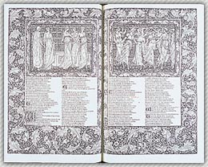

 A beautiful book is a work of art. During the 1890's, the Kelmscott Press in England produced many books that have been praised for their fine binding, paper, and typography. The press created an edition of the works of the poet Geoffrey Chaucer, shown, that must rank among the masterpieces of bookmaking. John M. Wing Collection, the Newberry Library, Chicago |
Not since the printing revolution of the 1400’s has the
industry of making books seen so much change! Here’s to the Age of Machines!
|